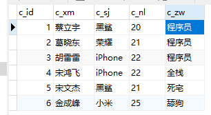

Bitmap算法
问题背景
数据库存储了一张人员表。

现在要对信息进行统计：
- 统计试用黑鲨的人
- 统计试用iPhone的人
- 统计是程序员的人
系统试用很久之后（很多版本的迭代）

现在要对信息进行统计：
- 统计试用iPhone，有女朋友，有男朋友，出生地在南京，不是党员。。。。。。。的人
经过多个版本的迭代。数据库的字段越来越多。sql语句越来越长。阅读性很差
为了解决此问题，引入了bitmap的算法。
为了解决的问题：
- 节约存储空间，常用的存储方式一般是一个list的实体类，或者是list的map。空间损耗太大。
- 去重，在数据量重复的情况下对数据进行去重是十分影响数据库运行的一种方法。可以回忆一下。
- 一旦修改一个条件需要重新进行一次数据库io
- 等等！！！
思路
我们可以颠覆传统的存储方式，以行为列，以列为行。。。。不在存在人而去存储条件。。

假设以上人物的c_id为主键，我现在要存储使用iphone的人。。

是程序员的人

那么如果即时程序员又是使用iphone的人呢

那如果是其他的业务做起来的得心应手，因为这个存储是真tm的小，计算机而言。传统的键值对的list<map>的形式一条记录就将近好几B。。但是这个。。一个位就能存一个数据。。。很可怕、、什么概念100W的数据量不到1M。。但是也有缺陷，他一般适用于是否存储。。如果可能性过多的话。存储的组会变多。